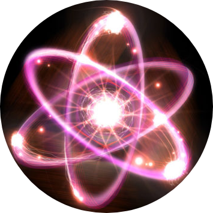

|  |
Medicina Nuclear |
¿Qué es la Medicina Nuclear?La medicina nuclear es una especialidad de la medicina en la que se utilizan radiotrazadores o radiofármacos (formados por un fármaco transportador y un isótopo radiactivo) para el diagnóstico y tratamiento de enfermedades. Estos radiofármacos se aplican dentro del organismo humano por diversas vías (la más utilizada es la vía intravenosa).Una vez que el radiofármaco está dentro del organismo, se distribuye por diversos órganos dependiendo del tipo empleado. La distribución de este es detectado por un aparato detector de radiación llamado gammacámara y almacenado digitalmente. Luego se procesa la información obteniendo imágenes de todo el cuerpo o del órgano en estudio. Estas imágenes, a diferencia de la mayoría de las obtenidas en radiología, son imágenes funcionales y moleculares, es decir, muestran cómo están funcionando los órganos y tejidos explorados o revelan alteraciones de los mismos a un nivel molecular. Origenes de la Medicina NuclearLa medicina nuclear usualmente está catalogada dentro de las especialidades "nuevas"; sin embargo, su historia se remonta a finales del siglo XVIII, cuando fueron descubiertos por Henri Becquerel unos "misteriosos" rayos provenientes del uranio,información que fue compartida con su compañero el doctor Pierre Curie, quien utilizó a su esposa Marie para el desarrollo de su tesis de grado. |
|